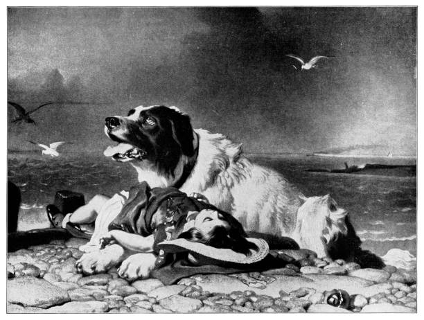
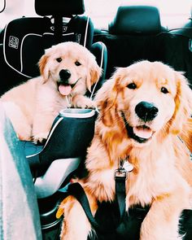

Hachiko: Quizás la historia de lealtad canina más famosa. Hachiko, un perro Akita, esperó fielmente a su dueño, el profesor Ueno, en la estación de tren de Shibuya en Japón durante más de nueve años después de su fallecimiento. Su historia es un símbolo de devoción inquebrantable.
Balto: Un perro husky siberiano que lideró su equipo de trineo en la épica "carrera del suero" de 1925 a través de condiciones árticas extremas para entregar antitoxina diftérica a la ciudad de Nome, Alaska, salvando a muchos niños de una epidemia.
Figo: Un golden retriever que, a pesar de estar gravemente herido por un autobús escolar, se interpuso entre el vehículo y su dueña ciega, Oriole, absorbiendo parte del impacto y permitiendo que ella sobreviviera.
Arthur: Un perro callejero ecuatoriano que se unió a un equipo sueco de corredores de aventura durante una extenuante carrera de varios días. A pesar de sus heridas y malnutrición, persistió junto al equipo, quienes finalmente lo adoptaron y lo llevaron a Suecia.
Smoky: Un pequeño Yorkshire Terrier encontrado en una trinchera abandonada durante la Segunda Guerra Mundial. Se convirtió en la mascota del escuadrón y realizó numerosas hazañas, incluyendo tirar un cable de comunicaciones a través de una tubería estrecha, salvando vidas y tiempo valioso.
Perros de rescate: Las historias de los perros entrenados para buscar y rescatar personas atrapadas en desastres naturales como terremotos o avalanchas son testimonio de su inteligencia y valentía.
Los perros que "hablan" con botones: En los últimos años, han surgido historias de perros que aprenden a comunicarse utilizando tableros con botones grabados con palabras. Sus "conversaciones" a menudo son hilarantes y revelan mucho sobre sus deseos y personalidades.
Perros con trabajos inusuales: Desde perros que detectan termitas hasta perros que ayudan a bibliotecarios a elegir libros, hay muchas historias divertidas sobre perros que realizan tareas sorprendentes.
Las travesuras cotidianas: Las incontables anécdotas de perros robando comida, persiguiendo sus colas de forma cómica o teniendo reacciones exageradas a cosas simples siempre sacan una sonrisa.
Perros de terapia: Las historias de perros que brindan consuelo y apoyo a pacientes en hospitales, residentes en hogares de ancianos o niños con necesidades especiales son un testimonio del poder curativo de su presencia.
Perros guía: Las vidas transformadas por los perros guía, que brindan independencia y seguridad a personas con discapacidad visual, son profundamente inspiradoras.
El vínculo inquebrantable: Las innumerables historias de dueños y sus perros que han superado juntos momentos difíciles, demostrando la profunda conexión emocional que puede existir entre especies.